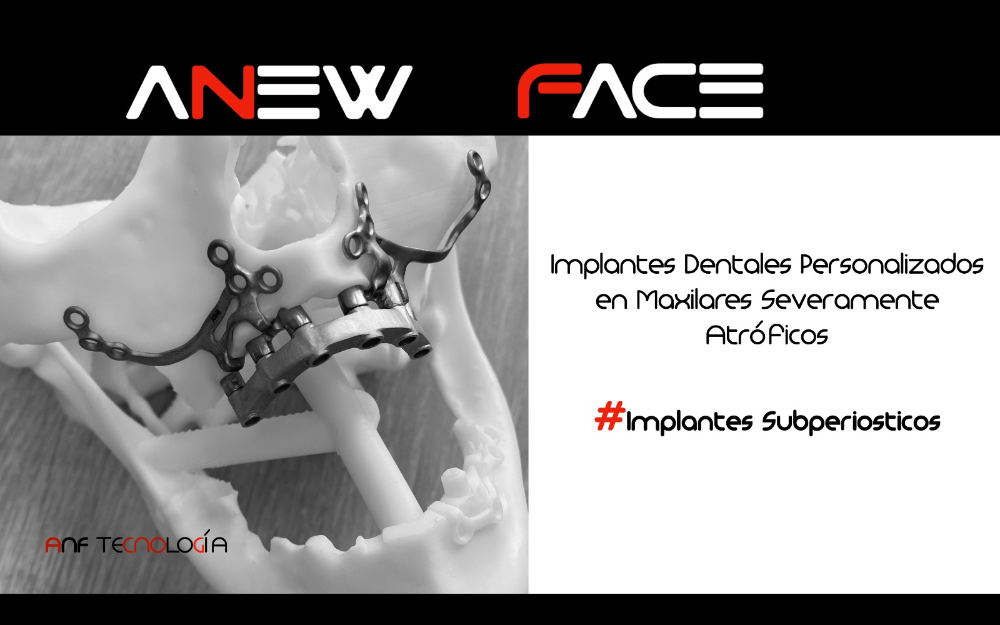
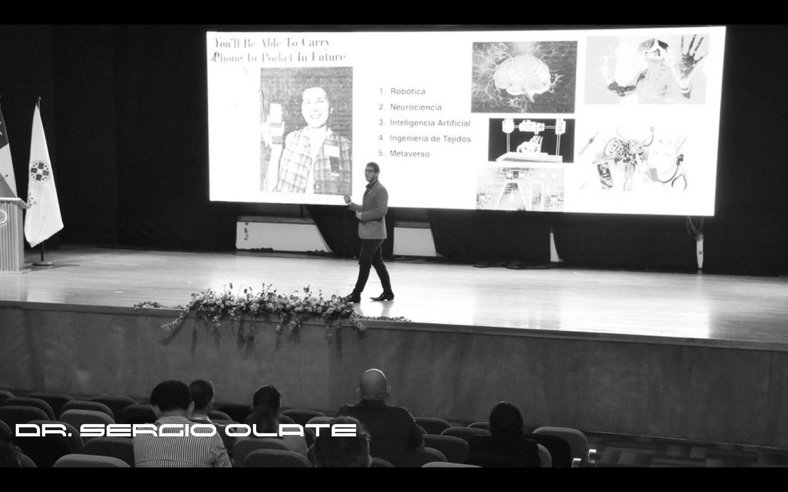

Cirugía ortognática
Evaluación de alteraciones maxilares y planificación para mejorar función y armonía facial.
Armonía · Función · Bienestar
Cirugía maxilofacial · Ortodoncia especializada
Cirugía maxilofacial y ortodoncia especializada trabajando en un mismo plan para transformar función, equilibrio facial y sonrisa.
Nuestras especialidades
Somos un centro dedicado a la cirugía maxilofacial y la ortodoncia especializada. Dos especialidades que, trabajando juntas, permiten planificar cada caso de forma completa: desde la mordida hasta la armonía del rostro.
Resultados
Algunos de los cambios logrados con cirugía maxilofacial y ortodoncia en pacientes de A NEW FACE.


Imágenes publicadas con autorización de los pacientes. Los resultados varían en cada caso y requieren evaluación profesional.
Sobre nosotros
En A NEW FACE creemos en una atención cercana, profesional y personalizada, donde la salud, la función y la estética se unen para lograr resultados naturales y sostenibles.
Conoce nuestra historia →Área cirugía
Atención especializada, planificación individual y acompañamiento en cada etapa del tratamiento.



Evaluación de alteraciones maxilares y planificación para mejorar función y armonía facial.
Soluciones implantológicas con planificación personalizada, incluidos implantes subperiósticos para maxilares atróficos.
Reconstrucción 3D con implantes personalizados de articulación temporomandibular.
Planificación de soluciones a medida según las necesidades de cada paciente.
Evaluación de alternativas de tratamiento dentro de un enfoque interdisciplinario.
Orientación especializada y planificación individualizada de procedimientos faciales.
Ortodoncia especializada
Ortodoncia orientada a la función y a la estética, con la ventaja de trabajar en coordinación directa con cirugía maxilofacial cuando el caso lo requiere.
Estudio de la posición dental, la mordida y su relación con la estructura facial.
Tratamiento con brackets para corregir la alineación dental y la mordida con precisión y control en cada etapa.
Alineadores transparentes y removibles, una alternativa discreta para ordenar tu sonrisa según la evaluación de cada caso.
Preparación ortodóncica de pacientes que serán sometidos a cirugía ortognática.
Finalización y ajuste de la mordida después de la cirugía, en coordinación con el equipo quirúrgico.
Control del avance y acompañamiento para mantener los resultados en el tiempo.
Plan integrado
Cuando un caso necesita ambas especialidades, el cirujano maxilofacial y el ortodoncista planifican juntos, con herramientas digitales y una misma meta para tu función y tu rostro.
Evaluación clínica e imagenológica compartida entre ambas especialidades.
Herramientas digitales según indicación, para anticipar resultados y coordinar cada etapa.
Ortodoncia, cirugía y seguimiento en un mismo lugar, sin derivaciones entre clínicas.


Nuestro equipo
Conoce más sobre nuestros profesionales y su trabajo.

Cirugía maxilofacial
Cirujano maxilofacial, con participación como expositor en congresos de cirugía y reconstrucción maxilofacial.
Visitar sitio oficial ↗
Ortodoncia
Ortodoncista. Planificación de tratamientos para mejorar la alineación dental, la mordida y la armonía de la sonrisa, en coordinación con cirugía maxilofacial.
Visitar sitio oficial ↗



Nuestra clínica
Conoce el entorno y la experiencia A NEW FACE.


ComplementarioTambién contamos con odontología general para prevención, controles y mantención de tu salud oral.
@anewface_odontologia ↗Contacto
Agenda una evaluación y recibe orientación sobre las alternativas de tratamiento para tu caso.
Escríbenos por WhatsApp →A NEW FACE
Temuco, Chile
WhatsApp: +56 9 5339 7166
Correo: anewfaceclinica@gmail.com
Instagram: @clinica_anewface